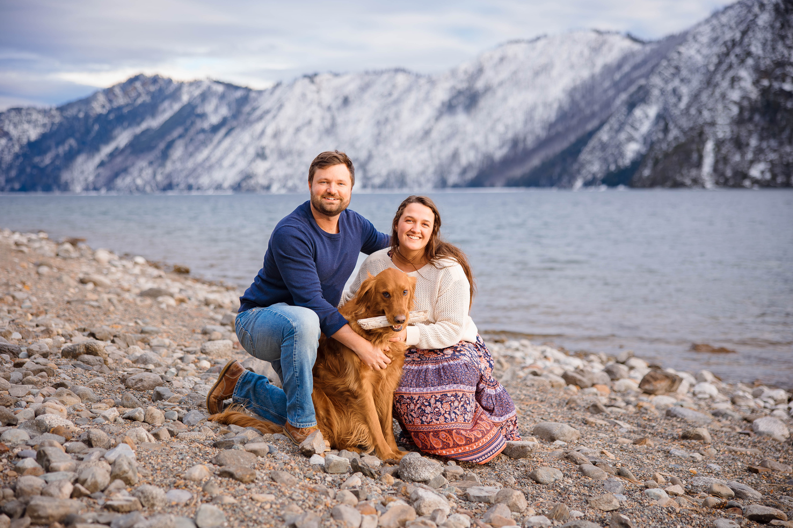

What does a precinct committeeman do?
A precinct committeeman is your neighborhood republican representative. We represent our neighbors views, vote on resolutions, and help recommend candidates.
🇺🇸 Vote 🇺🇸
Kootenai First. Idaho First. America First.

Left, me. Right, my beautiful fiance: Camille. Middle: Rusty the golden retriever
I'm a Software engineer lead at IBM, a conservative/Minnesotan refugee, and a soon-to-be husband.
I moved to precinct 417 in 2022 and live south of Bryan Elementary. I left Minnesota during the covid years while I refused to comply with my company's vaccine mandate. I searched the country for the best place to settle down and start a family. I fell in love Coeur d'Alene and North Idaho.
After moving here, I started a young conservatives meetup group, where I met my soon-to-be wife, Camille. We're getting married May 1st right here on lake Coeur d'Alene.
North Idaho feels like the Minnesota I grew up in in the 90s. It's friendly, quiet, and kids play freely and safely. I believe the people in our neighborhood make this possible. We're weary of politicians, we love Jesus Christ, we value what we have here in North Idaho, and we see what is to come if we do not preserve what we have. I aim to preserve what we have, as a true conservative.